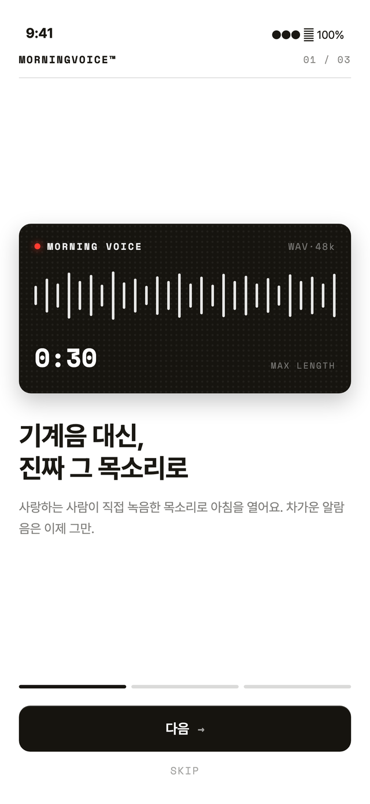
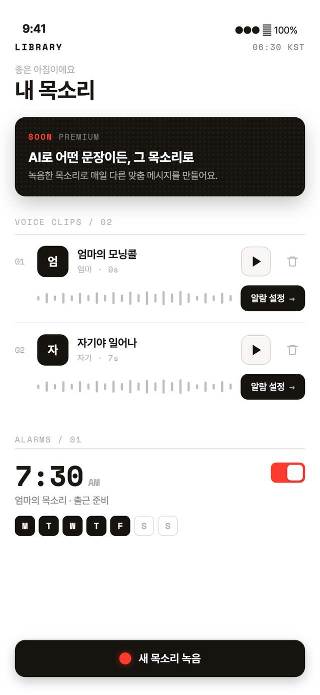
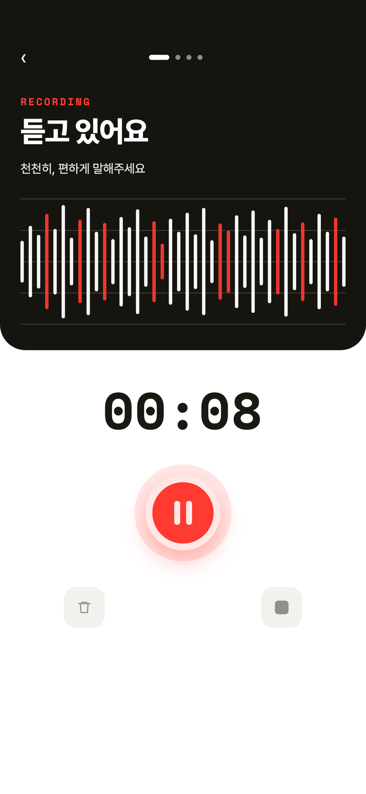
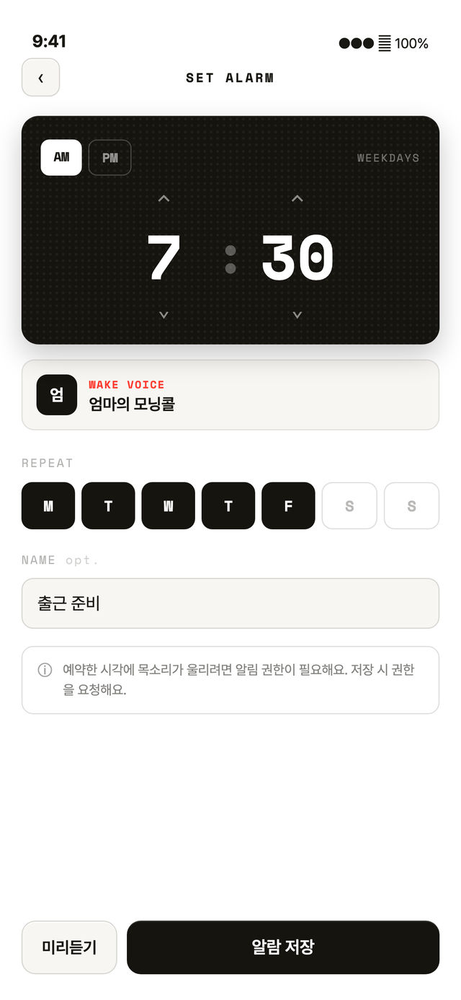

사랑하는 사람의 목소리로 여는 아침. 엄마·연인·아이의 목소리를 30초 안에 녹음해, 원하는 시간에 알람으로 — 차가운 기계음은 이제 그만.




기계음 대신, 사랑하는 사람이 직접 녹음한 목소리가 예약한 순간 그대로 흘러나옵니다.
앱에서 바로 30초 이내로 녹음하고 라이브러리에 차곡차곡. 미리듣기로 확인하고 저장하면 끝.
시간과 반복 요일만 정하면 끝. 평일만, 주말만, 매일 — 요일별로 자유롭게 설정하세요.
모든 녹음과 설정은 오직 당신의 기기에만. 서버 전송도, 계정 가입도, 광고 추적도 없습니다.